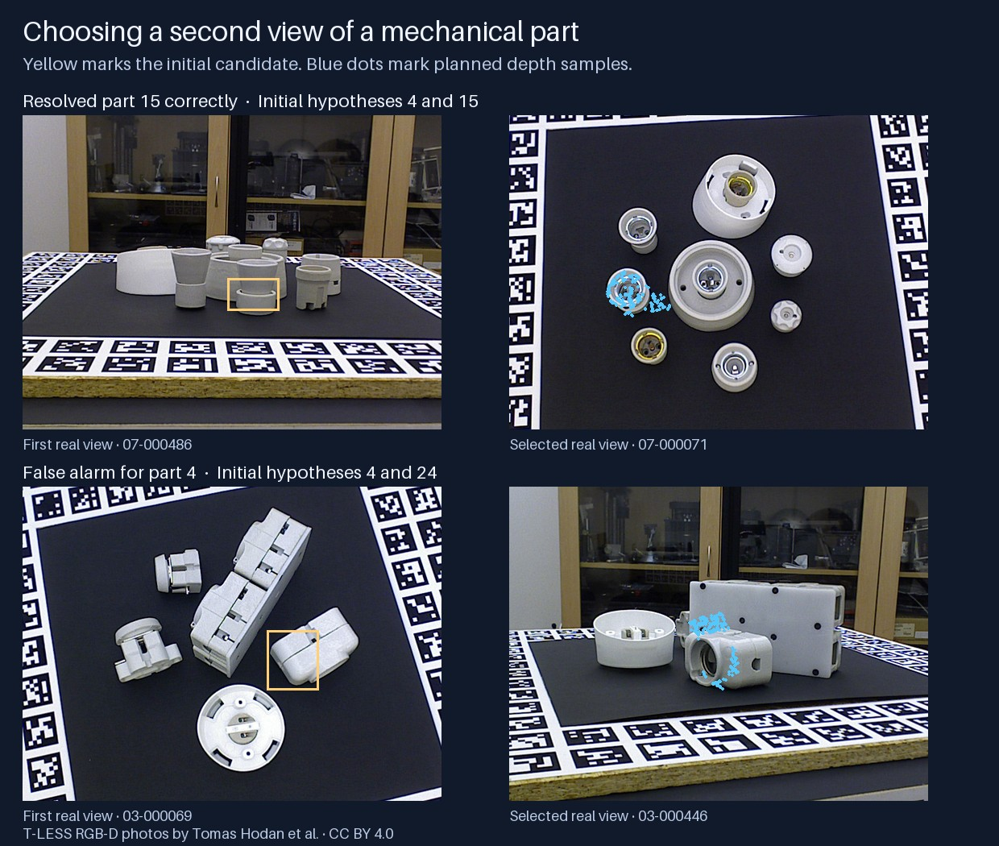

Can choosing the next view identify a part?
On 117 candidate regions, the targeted camera gave 5 correct identities and 70 errors. An angle fixed by geometry gave 6 correct identities and 70 errors. Each method could reveal one extra depth image.

Photos by Tomáš Hodaň et al. from T-LESS (CC BY 4.0). Resized images with experimental overlays. View all 117 decisions.